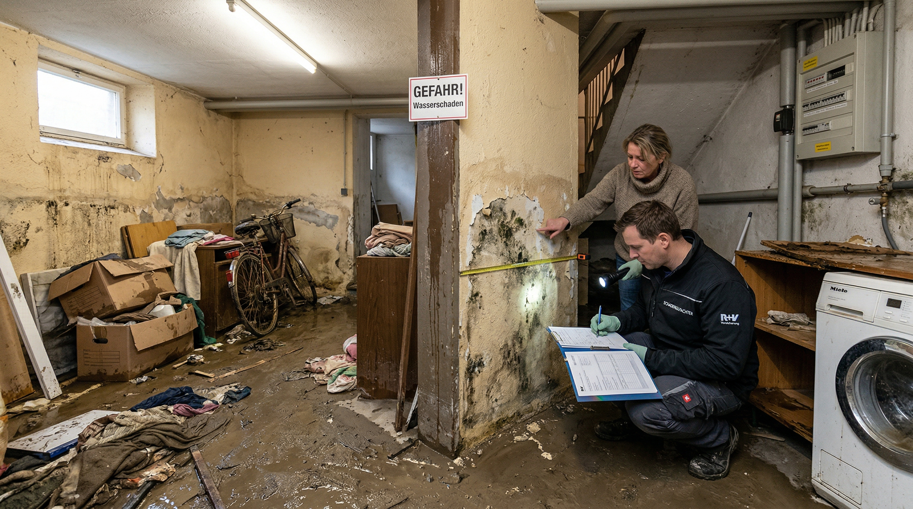

Fachbeiträge, Branchennews und Expertenwissen rund um Versicherung und Risikomanagement in der Wohnungswirtschaft.

GebäudeschutzStarkregen, Überschwemmungen und Hagel nehmen zu. Erfahren Sie, wie Sie Ihre Wohnungsbestände mit einer Elementarschadenversicherung optimal schützen.
Weiterlesen →Die Digitalisierung der Wohnungswirtschaft schreitet rasant voran — und mit ihr wachsen die Cyberrisiken. Wir zeigen Ihnen, welche Mindestanforderungen Versicherer 2026 stellen und wie Sie Ihr Wohnungsunternehmen umfassend absichern.
Weiterlesen →Hochwasser, Starkregen, Erdrutsch: Die Häufigkeit und Intensität von Naturereignissen nimmt zu. Für Wohnungsunternehmen und Hausverwaltungen stellt sich zunehmend die Frage, ob eine Elementarschadenversicherung noch optional ist oder zur betrieblichen Notwendigkeit geworden ist.
Weiterlesen →Vorstände und Geschäftsführer von Wohnungsunternehmen haften bei Pflichtverletzungen persönlich mit ihrem Privatvermögen. Eine D&O-Versicherung schützt Führungskräfte vor existenzbedrohenden Schadensersatzforderungen und sichert die unternehmerische Handlungsfähigkeit.
Weiterlesen →Die europäische Datenschutz-Grundverordnung wird 2026 durch wichtige Ergänzungen erweitert. Für Hausverwaltungen und Wohnungsunternehmen ergeben sich daraus konkrete neue Pflichten bei der Verarbeitung von Mieterdaten. Wir erklären, was sich ändert und wie Sie sich vorbereiten.
Weiterlesen →Starkregen, Überschwemmungen und Extremwetterereignisse nehmen in Deutschland messbar zu. Für Wohnungsunternehmen und Hausverwaltungen bedeutet das: Der bisherige Versicherungsschutz reicht oft nicht mehr aus. Wir zeigen, welche Risiken der Klimawandel mit sich bringt und wie Sie Ihren Gebäudebestand richtig absichern.
Weiterlesen →Unterschlagung, Veruntreuung und Social Engineering gehören zu den häufigsten, aber am wenigsten beachteten Risiken in der Wohnungswirtschaft. Eine Vertrauensschadenversicherung schützt Ihr Unternehmen vor den finanziellen Folgen krimineller Handlungen durch Mitarbeiter und externe Täuschungsmanöver.
Weiterlesen →Unsere Experten beraten Sie persönlich und finden die optimale Lösung für Ihr Wohnungsunternehmen.